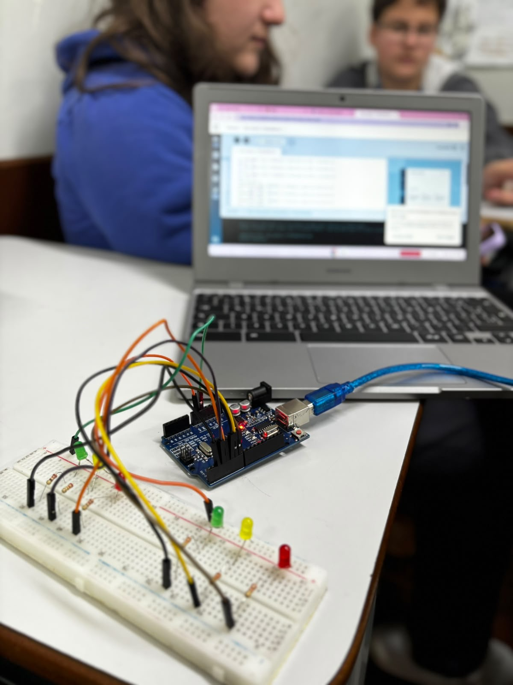

Este site apresenta alguns dos trabalhos e projetos realizados em sala de aula nas disciplinas de Robótica e Física e Tecnociência.
O ciclo da luz mostra como a iluminação pode ser controlada por componentes eletrônicos e programação.
O Disco de Newton demonstra como as cores da luz podem se misturar quando o disco gira rapidamente.
É um efeito que faz a luz aumentar ou diminuir seu brilho de forma gradual.
O LED RGB utiliza as cores vermelho, verde e azul para criar diferentes cores de luz.

O projeto utiliza LEDs vermelho, amarelo e verde para representar o funcionamento de um semáforo.
A popularização dos smartphones com câmeras de alta resolução transformou a independência de pessoas cegas ou com baixa visão. Ao capturar imagens detalhadas, esses sensores permitem que aplicativos com inteligência artificial leiam textos pequenos, identifiquem cédulas, reconheçam rótulos de produtos e descrevam ambientes por áudio em tempo real.
Para quem possui baixa visão, a alta definição possibilita ampliações nítidas sem distorção, transformando o celular em uma lupa digital avançada. Dessa forma, a evolução da câmera transforma o smartphone em um assistente visual indispensável para a autonomia no dia a dia.
A luz pode se propagar, refletir, sofrer refração e ser absorvida.
O espelho reflete a luz, permitindo que nossa imagem seja formada.
A refração acontece quando a luz passa de um meio para outro e muda sua direção.
As lentes desviam a luz e são usadas em óculos, câmeras e lupas.